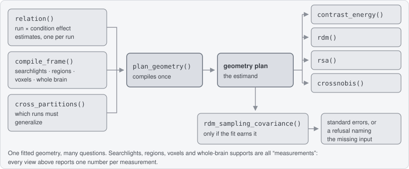
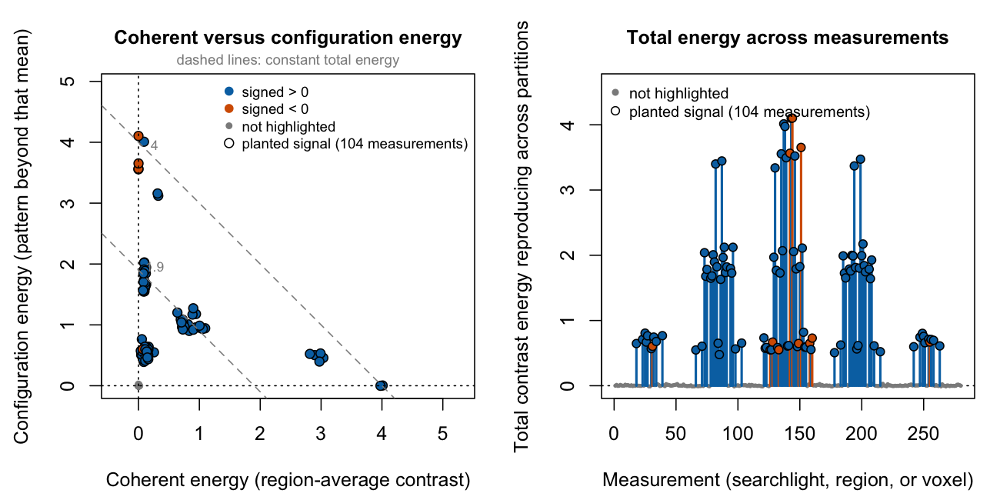
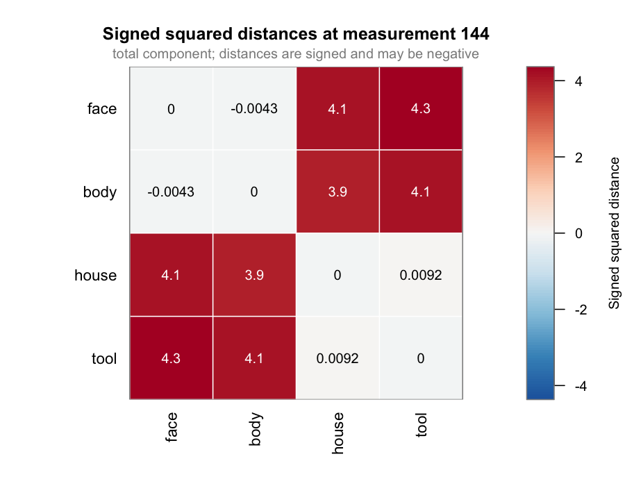

Ask a task-fMRI dataset four questions from one fit, and find out what kind of effect you found.

You declare the condition effects, the measurements you want answers at, and which runs must generalize. That compiles once into a geometry plan, which records the quantity you are estimating before any brain data is read. Contrasts, RDMs, RSA, and crossnobis distances are queries against it.
A measurement is a spatial unit: a searchlight, a region, a voxel, or the whole brain. Every result has one row per measurement.
Five lines to a first result
library(crossform)
example <- example_fmri_effects() # 4 conditions, 4 runs, 280 searchlights
plan <- plan_geometry(
example$fit$relation,
at = example$frame,
over = cross_partitions(
example$fit$relation,
independence = "independent",
generalizes_over = "run"
)
)
effect <- contrast_energy(plan, example$contrast)
plot(effect,
highlight = example$truth$signal_measurements,
highlight_label = "planted signal"
)
The fixture plants two animate-versus-inanimate blocks of 19 voxels each, at opposite ends of the volume, with the same per-voxel amplitude. In one the sign alternates between neighboring voxels, so the block’s average pattern nearly cancels. In the other every voxel shifts the same way. The analysis is not told where either is; highlight only colors the answer afterwards.
The right panel is the whole map. The 104 largest energies in it are exactly the 104 searchlights that touch a planted block, and the largest energy anywhere else is 0.03, against 4.10 at the peak. The rest lies on zero rather than above it, 45% of it below, because crossvalidated energy is centered at zero under the null and negatives are kept rather than clipped. That band is the noise floor itself. The left panel splits the same energy in two, and the two blocks separate: one arm climbs the vertical axis, the other runs out along the horizontal.
Every object prints as itself.
effect
#> <effect_contrast_view>
#> measurements: 280
#> contrast: face 0.5, body 0.5, house -0.5, tool -0.5
#> measurement signed coherent configuration total coherence_fraction
#> 1 -0.106479 0.0070182 -6.660e-03 0.0003580 NA
#> 2 -0.014663 -0.0022348 1.516e-02 0.0129223 NA
#> 3 0.058211 0.0012974 -3.917e-03 -0.0026194 NA
#> 4 0.019986 -0.0005859 -6.015e-05 -0.0006461 NA
#> 5 0.029592 -0.0002906 1.334e-02 0.0130512 NA
#> 6 -0.003182 -0.0009076 4.846e-03 0.0039387 NA
#> ... 274 more measurements
#> coherence_fraction: 143 of 280 valid; NA where coherent and configuration
#> are not a nonnegative partition
peak <- which.max(effect$total)
round(c(
searchlight = peak,
signed = effect$signed[peak],
total = effect$total[peak],
coherent = effect$coherent[peak],
configuration = effect$configuration[peak]
), 3)
#> searchlight signed total coherent configuration
#> 144.000 -0.052 4.103 -0.001 4.104The last line of that print is not boilerplate. coherence_fraction is NA in those first rows because the two components do not form a nonnegative partition there, and a share of a negative quantity is not a share of anything.
One line in the first block deserves a second look. cross_partitions() pairs every partition with every other one, once. generalizes_over names the axis those partitions are — runs, sessions, tasks — and binds it into the plan’s identity, because cross-run and cross-session reproduction are different quantities at the same fold count; if your partitions are sessions, pass "session". independence = "independent" declares that the partitions’ estimation errors are independent, which separate runs or sessions with separate noise satisfy; omit it and you keep a point estimate but earn neither cross-generalized nor analytic-uncertainty capabilities. See ?cross_partitions; one tier out, ?pairing covers nested or directed designs.
Now change the question. No refit.
plan holds an identity, not a matrix.
plan
#> <effect_geometry_plan>
#> effects: 4 x 4
#> measurements: 280
#> features: 280
#> metric: implicit identity
#> generalizes: 6 partition pairs over run, endpoints independent
#> execution: query-first, in memory
#> state: nothing computed yet
#> next: contrast_energy(plan, weights), rdm(plan), rsa(plan)Save it with the analysis record; it names the conditions, domain, frame, run pairs, metric, and units. Nothing is computed until a view asks, and print(plan, detail = TRUE) adds the compiler’s own account of how it will do it.

At searchlight 144, face and body are -0.004 apart and house and tool 0.009, while every animate-versus-inanimate pair is above 3.8. Nothing asked for that block structure.
category <- rsa(plan, models = list(category = example$model_rdm))
dim(category$coefficients)
#> [1] 280 2Linear RSA against a model RDM, from the same plan: an intercept and the model.
One of the six pairs; the other five are never materialized. With 100 conditions, three of the 4,950 pairs cost three pairs.
rdm() reports : under cross-run pairing a signed crossvalidated squared Euclidean distance, and squared Mahalanobis (crossnobis) once you supply a fixed neural metric. It is deliberately not 1 - Pearson correlation; see the correlation-distance policy, or vignette("correlation-distance-policy") offline.
What kind of effect is it?
That left panel is the part that is hard to get elsewhere. A searchlight’s reproducible energy splits in two:
-
coherentis the energy carried by the searchlight’s frame-weighted average pattern, which is the familiar univariate story; -
configurationis the reproducible spatial pattern beyond that mean; -
coherent + configuration = total, exactly, at every measurement, which is why the dashed guides are lines of constant total. The panel is drawn on equal axes so those guides really do run at slope -1.
So you can say how much of an effect survives once its regional mean is accounted for, without a second analysis and without discarding either part.
The fastest way to see it is to ask the same question of three regions instead of 280 searchlights. Nothing changes but the frame.
truth <- example$truth
labels <- rep("elsewhere", example$domain$n_features)
labels[truth$planted_features] <- "pattern block"
labels[truth$mean_features] <- "mean-shift block"
region_plan <- plan_geometry(
example$fit$relation,
at = compile_frame(regions(labels), example$domain),
over = cross_partitions(
example$fit$relation,
independence = "independent", generalizes_over = "run"
)
)
contrast_energy(region_plan, example$contrast)
#> <effect_contrast_view>
#> measurements: 3
#> contrast: face 0.5, body 0.5, house -0.5, tool -0.5
#> measurement signed coherent configuration total coherence_fraction
#> elsewhere 0.01205 0.0001184 0.002417 0.002535 0.04669
#> mean-shift block 2.01677 4.0671067 -0.006716 4.060391 NA
#> pattern block 0.51791 0.2678235 3.808338 4.076161 0.06570
#> coherence_fraction: 2 of 3 valid; NA where coherent and configuration are
#> not a nonnegative partitionThe two blocks reproduce almost exactly the same total, 4.06 and 4.08, and the split is opposite: the mean-shift block puts all of it in coherent, the pattern block puts 93% of it in configuration, and the rest of the brain reproduces 0.003. That is the central claim, in three rows. The mean-shift block’s fraction is not reported because its configuration remainder came out very slightly negative, which is the honest answer for a block that has no pattern beyond its mean.
Back at searchlight resolution: every one of the 52 searchlights touching the pattern block carries more configuration than coherent energy, and the largest coherent energy among them is 0.33 against 4.10 of configuration. The 52 touching the mean-shift block reach 4.01 of coherent energy while their configuration never exceeds 1.27.
signed, back in that first table, is a first moment: the ordinary contrast of the region-average pattern, in your effect’s units and sign. The energies are second moments, squared and crossvalidated. So signed sees only the coherent half — which is exactly what separates the two blocks.
round(as.data.frame(effect)[c(144, 137),
c("signed", "coherent", "configuration", "total")], 3)
#> signed coherent configuration total
#> 144 -0.052 -0.001 4.104 4.103
#> 137 2.003 4.011 0.004 4.015Two searchlights, one from each block, reproducing the same energy. Searchlight 137 is loud in a signed map. Searchlight 144 — the strongest measurement in the whole volume — has a signed contrast of -0.052, smaller than the largest signed value anywhere outside the planted blocks (0.154), so a signed map ranks the best result in the volume below noise.
Most toolboxes ask you to choose first: remove the regional mean and the coherent half is gone, keep it and the two are summed into one number. Reading the results (vignette("interpreting-results")) covers the traps in the coherent share.
Your own data, the same five lines
Everything above the blank line below is your data. Everything under it is the opener again, unchanged. It runs as written.
set.seed(1)
conditions <- c("face", "house", "cat", "chair")
mask <- array(TRUE, c(8, 8, 6)) # substitute your mask
dom <- volume_domain(mask, spacing = c(3, 3, 3))
frame <- compile_frame(searchlights(radius = 4), dom)
# Substitute your own: a trial-by-voxel beta series and its design table.
# Twelve voxels here carry the same face-minus-house pattern in every run,
# alternating in sign so the regional mean stays near zero.
planted <- array(FALSE, dim(mask))
planted[3:4, 3:5, 3:4] <- TRUE
pattern <- rep(c(3, -3), length.out = sum(planted))
design <- expand.grid(trial = 1:3, condition = conditions,
run = paste0("run", 1:4), stringsAsFactors = FALSE)
series <- matrix(rnorm(nrow(design) * sum(mask)), nrow(design), sum(mask))
is_face <- design$condition == "face"
is_house <- design$condition == "house"
series[is_face, planted[mask]] <- series[is_face, planted[mask]] +
rep(pattern, each = sum(is_face))
series[is_house, planted[mask]] <- series[is_house, planted[mask]] -
rep(pattern, each = sum(is_house))
by_run <- split(seq_len(nrow(design)), design$run)
indicator <- function(rows) {
x <- stats::model.matrix(~ 0 + factor(design$condition[rows], conditions))
`colnames<-`(x, conditions)
}
targets <- diag(length(conditions))
dimnames(targets) <- list(conditions, conditions)
own_fit <- lm_relation_fit(
lapply(by_run, function(rows) series[rows, , drop = FALSE]),
design = lapply(by_run, indicator), effects = targets, domain = dom
)
own_plan <- plan_geometry(own_fit$relation, at = frame, over = cross_partitions(
own_fit$relation, independence = "independent", generalizes_over = "run"
))
own_effect <- contrast_energy(own_plan, c(face = 1, house = -1, cat = 0, chair = 0))
touching <- which(Matrix::rowSums(frame$weights[, planted[mask], drop = FALSE]) > 0)
plot(own_effect, highlight = touching, highlight_label = "planted signal")lm_relation_fit() fits the condition estimates from the trials rather than taking them as given, which is what keeps the residual error channel the standard errors below need. Did the searchlights that actually touch the planted voxels win?
ranked <- order(own_effect$total, decreasing = TRUE)
c(
searchlights = nrow(frame$index),
touching_signal = length(touching),
top_energies_touching = sum(ranked[seq_along(touching)] %in% touching),
peak_energy = round(max(own_effect$total), 2),
largest_elsewhere = round(max(own_effect$total[-touching]), 2)
)
#> searchlights touching_signal top_energies_touching
#> 384.00 44.00 44.00
#> peak_energy largest_elsewhere
#> 27.68 0.56The 44 largest energies in the map are exactly the 44 searchlights that touch the planted voxels. All 44 are configuration-dominated, and 59% of the rest fall below zero — the null here has mean -0.0002 and is skewed right, so more than half of it lands under the line.
Already have condition means instead of trials? relation() takes them directly, one condition-by-voxel matrix per run with rows named by condition, and the other lines do not change:
means <- lapply(by_run, function(rows) {
t(vapply(conditions, function(condition) {
colMeans(series[rows[design$condition[rows] == condition], , drop = FALSE])
}, numeric(sum(mask))))
})
betas_only <- relation(means, effects = effect_space(conditions), domain = dom)
betas_plan <- plan_geometry(betas_only, at = frame, over = cross_partitions(
betas_only, independence = "independent", generalizes_over = "run"
))
max(abs(own_effect$total -
contrast_energy(betas_plan, c(face = 1, house = -1, cat = 0, chair = 0))$total))
#> [1] 1.065814e-14Same estimates, same energies. What the averaged route cannot keep is the error channel, which the next section asks for.
Swap searchlights(radius = 4) for regions(labels), voxelwise(), or whole_brain(), and volume_domain() for abstract_domain(n_features) when the features are not a volume. neuroim2 users have the optional adapter — neuroim2_volume_domain(), neuroim2_searchlights(), and as_neurovol(), which keep stable full-volume indices and map results back without interpolation; see vignette("neuroim2-data"). Starting from scan responses and an event table rather than betas? Use study(), plan_relation(), and estimate_relation(), the ingestion spine that from-observations (vignette("from-observations")) walks end to end.
Reading a map without ground truth
highlight is optional, and on real data you will not have it — omit it and the picture still works. In the right panel the band around zero is the noise floor, because crossvalidated energy is centered there when nothing reproduces; candidates are the measurements standing clear of it.
What the picture does not give you is a threshold or a p-value. crossform does no spatial and no group inference (see Status and scope), and a within-measurement standard error needs the residual channel, so fit with lm_relation_fit() as above, or take the from-observations route (vignette("from-observations")), rather than importing betas. Reading a map without ground truth is the longer version.
Uncertainty, only when it is earned
example_fmri_effects() was built by lm_relation_fit(), so it kept its residual channel and can be asked for standard errors.
round(sqrt(sampling_covariance(
rdm_sampling_covariance(plan, example$fit, target = "null", at = peak)
)), 4)
#> face - body face - house face - tool body - house body - tool house - tool
#> 0.0142 0.0142 0.0142 0.0142 0.0142 0.0142These are within-searchlight standard errors under a declared equal-partition, fixed-metric, separable error model, not a random-field model, a confidence interval, or group inference. The residual covariance behind them is estimated, not known, so print() on the covariance object reports the residual degrees of freedom and the number of residual directions the searchlight actually spends variance on — and the call refuses outright when there are too few of the first for the second.
Your own fit above earns them too, because lm_relation_fit() kept its residuals. Ask the same of the condition-means relation beside it and the answer is an object that names what is missing and how to earn it.
catch_refusal(
rdm_sampling_covariance(betas_plan, betas_only, target = "null", at = 1L)
)
#> <effect_capability_refusal>
#> capability: sampling_covariance
#> namespace: evidence_sampling
#> reasons:
#> - missing_error_channel
#> remedies:
#> - Refit raw observations with `lm_relation_fit()`.
#> state: refused; no partial result was producedBeta matrices hold no residuals and no residual degrees of freedom, and the six run pairs share run estimates, so their spread is not a standard error either. sampling_capabilities(plan, example$fit) answers the admission question before you provoke it, and the failure gallery (vignette("failure-gallery")) shows six realistic errors the package guards against.
Why it is different
- One fitted geometry, many questions. A contrast map and an RDM at the same searchlights come from the same estimates by construction, and a second question costs a query rather than a refit.
- Generalization is part of what you estimated, not a fold count. The declared axis is bound into the plan’s identity, so the plan says which quantity you ran; block size and storage change only the execution record.
-
The novelty is architectural. Not RSA, crossnobis, or the analytic covariance formula, which are established, but that contrast energy, squared-distance RDMs, fixed linear RSA, and ordered cross-axis hypotheses are all queries against one typed cross-partition form. What is novel in crossform? (
vignette("novelty")) is the ledger separating what is demonstrated from what is still gated.
What is core, and what is not
Every line of R executed above is core. That is the whole point of the tier: an ordinary representational analysis finishes without reaching past it, and the reference index is grouped in the same order this README is.
-
Core (21 functions) —
example_fmri_effects(),effect_space(),relation()andlm_relation_fit(), the two domain and four frame constructors withcompile_frame(),cross_partitions(),plan_geometry(), the viewscontrast_energy()/rdm()/rsa(), the three sampling-covariance functions,catch_refusal(), andcompute_policy(). Everything this README executes is core-tier, andtests/testthat/test-readme-surface.Rholds it that way. -
Core (ingestion) (20 more) —
study(),plan_relation(),estimate_relation()and the typed-facts spine, for arriving with scan responses and an event table rather than betas. A user who starts from betas meets none of it;vignette("from-observations")is its narrative. -
Advanced — explicit geometry queries and custom bilinear operators, frame algebra and conservation certificates, fixed and learned metrics,
crossnobis(), error-channel and residual readers, and numerical-agreement contracts. Specialist tools. The core path never needs them, and the matched-pair (ER-RSA) family inside this tier is explicitly provisional. -
Coupling and measurement — experimental, small-node only.
measurement_form(),coupling(), the connectivity readings, and tomography relate two sets of measurements to each other rather than scoring one. The API may change. The tier is scale-gated and the package refuses brain-scale claims here: a request whose dense payload exceeds the version 0.1 small-node limit of 256 MiB is refused outright rather than approximated, with the remedy “use the support-local geometry plan; brain-scale measurement tomography is not yet exported.”vignette("evidence-pairing")is its narrative. -
Adapters —
neuroim2_volume_domain(),neuroim2_searchlights(),as_neurovol(),bids_study(),fmridesign_design_model(),fmrireg_relation(). Every one of those dependencies is optional, and the core is not shaped by any of them. -
For extension packages — five sanctioned entry points for handing data, a design, and an error channel into the core; see
vignette("crossform-extending"). Not an end user’s surface.
Population (forthcoming). A population layer — mass-preserving transport of per-subject conservative geometry — is specified in design/population-form-contract.md and under construction. Until it lands, crossform does no group inference at all.
Install
The repository is not yet public and the package is on neither CRAN nor R-universe, so today the route is a local checkout. Build the vignettes while you install — ?crossform and everything under “Where next” reaches them through vignette(), and an install without them leaves those calls dead.
remotes::install_local(".", build_vignettes = TRUE)Or the same thing without remotes, from a shell in the checkout:
Once published, remotes::install_github("bbuchsbaum/crossform", build_vignettes = TRUE) and the R-universe repository https://bbuchsbaum.r-universe.dev become the supported routes.
Where next
Every article below is also an installed vignette, so vignette("<name>") works offline once you have installed with vignettes.
-
Introduction ·
vignette("introduction")— the entry point, from a ready relation to standard errors. -
Reading the results ·
vignette("interpreting-results")— what each column means, and three interpretive traps. -
Coming from rMVPA ·
vignette("from-rmvpa")— how the familiar objects map onto this vocabulary. -
Fit condition effects from observations ·
vignette("from-observations")— scan responses, events, confounds, censoring. -
neuroim2 data ·
vignette("neuroim2-data")—NeuroVolandNeuroVecin, brain maps out. -
Evidence pairing ·
vignette("evidence-pairing")— experimental, small-node only: results that relate two regions, and the contracts each connectivity view requires. -
Extending crossform ·
vignette("crossform-extending")— the five sanctioned entry points for an extension or adapter package, and what is closed to one. -
What is novel in crossform? ·
vignette("novelty")— the claim ledger. -
Failure gallery ·
vignette("failure-gallery")— six errors a conventional pipeline executes silently. -
Correlation-distance policy ·
vignette("correlation-distance-policy")— whyrdm()is not1 - r. -
design/(contracts) ·exemplars/haxby2001/(public-data comparison) ·benchmarks/(runtime and memory records)
Status and scope
crossform is experimental; exported names may still change. It runs sequentially, and it does not preprocess fMRI, register images, build hemodynamic response models, or perform group inference.
Demonstrated. On the Haxby 2001 exemplar (eight stimulus categories over twelve runs, 577 ventral-temporal searchlights), crossform agrees with an independent reference loop to 1.33e-15 and with rMVPA to 8.88e-16 on the matched crossvalidated squared-Euclidean/crossnobis estimand; refitting the raw responses to retain the error channel reproduces the point RDM to 4.44e-16. At 100 conditions over 1,080 searchlights, one hundred selected pairs run in 0.14 s and the fused full RDM in 1.94 s against 2.73 s for materialize-then-project — a ratio of 0.71, with a 4.4e-16 oracle (the materialized comparator is itself fast now that the packed-form kernel is native, so the query-first advantage is smaller than it was).
On the same exemplar, the coherent/configuration decomposition runs on real data: 06-coherent-configuration.R reads face − house at all 577 VT searchlights and at one whole-VT region from a single plan, and total = coherent + configuration recomposes to 5.55e-17. The total is positive at 576 of 577 searchlights, and over the 536 with a valid coherence fraction the coherent share has median 0.53 (IQR 0.28–0.77): about half of the reproducible face/house energy in this subject’s VT is carried by the searchlight’s own weighted common spatial mode, which a demeaning analysis would discard and a total-only analysis would never see. The retained signed marginal supplies the direction the energies cannot: it is negative at 568 of 577 searchlights, so the common mode runs house above face. One subject, condition means rather than GLM betas, an identity metric, and no inference — this demonstrates the decomposition, not a result about faces.
Parity with the reference implementation of the RSA literature is also demonstrated. On a deterministic fixture (6 conditions, 4 runs, 40 voxels, non-spherical residual covariance), the fixed-metric crossnobis RDM agrees with version-pinned Python rsatoolbox 0.3.2 to 3.8e-15 over 60 entries and the linear RSA coefficients to 8.6e-16 over 20 terms, against a declared 1e-10 tolerance, with an independent all-pairs numpy oracle as a third check: exemplars/rsatoolbox-parity, ratcheted by tests/testthat/test-rsatoolbox-parity.R. Four conventions were matched exactly rather than conceded — fold pairing, division by the channel count, the pooled precision estimator, and the cosine-normalized regression objective. From the same fit crossform additionally returns the signed contrast energy, the exact coherent/configuration/total partition, and analytic standard errors, none of which the external RDM carries. One simulated subject, the fixed-linear subset only, no group inference, no correlation distance, and no timing claim.
Not demonstrated. Those results show numerical parity and an integrated uncertainty path. They do not show a matched-estimator speed advantage, and say nothing about correlation-distance RSA. A real rectangular cross-axis exemplar and an operational conservation example remain to be earned, as does any population or group-level claim; map-scale runtime and storage claims are qualified under benchmarks/. The claim ledger (vignette("novelty")) is the authority on which gates have landed.